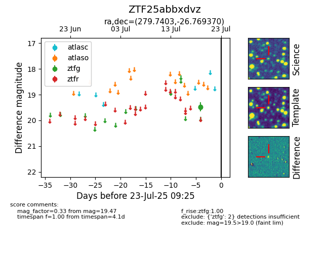

Target ZTF25abbxdvz at 2025-07-23 11:48, see:
FINK: fink-portal.org/ZTF25abbxdvz
Lasair: lasair-ztf.lsst.ac.uk/objects/ZTF25abbxdvz
ALeRCE: alerce.online/object/ZTF25abbxdvz
alt names
ZTF25abbxdvz (ztf,fink)
coordinates:
equatorial (ra, dec) = (279.7403,-26.76937)
galactic (l, b) = (7.5484,-9.33107)
photometry
last ztfg=19.47
2 ztfg detections
